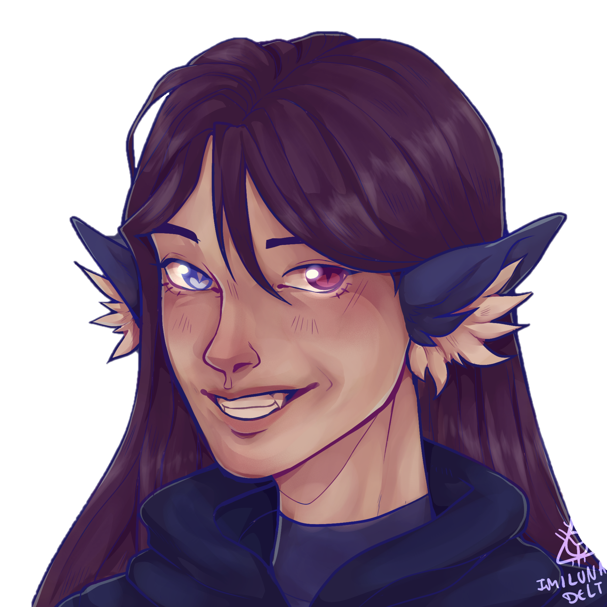

"An identity that haunts me still, one that cuts me deeper than father's knife"
"I one day could be more, or was my father really right about me"
Title: The Heir
Full Name: Micheal Afton
Nicknames: Mike
Birthday: 15th March
Age: 21
Race: Werewolf Power Mystic (Power of Electricity)
Height: 5'10
Status: Alive. Mostly.
Job: Security Guard at Freddy Fazbear's Pizzeria
Affiliations: The Pizzeria
"I should be dead. but I'm not."
Early Life
Early in life, Micheal was impressionable. Growing up with Marie, he was paired to be the perfect financial heir of the pizzeria when William passed it on. Schoolwork years above his age and hours of numbers and paperwork training stacked up in the young boy's life. As he got older, he defied his father more, causing his punishments to be more severe. Tragedy struck when Marie was killed and his entire world fell apart as he found her body curled up outside. But his father didn't care. After the funeral, the training continued.
Years went by, he grew older and more reclusive. His father would take him hunting. Shotguns, knives, even bare hands. He'd teach him the weak points, how to herd the prey and how to gut them effectively. Mike's life slowly blurred into a repetitive schedule until the five year date of Marie's death.
His father told him to sit in the Parts and Service room and stay quiet. He did, unsure what was happening but expecting this to be more 'training'. Some time passed, before five kids were lead inside. Almost as if Mike wasn't there, William gutted them all, their blood staining his yellow fur red. After he was finished, he looked towards Micheal. "Clean it up." He commanded. Micheal was frozen, staring at the bodies. "Micheal..clean it up. Do you want them to find out? They'll send me to jail..and you'll have no one. Clean it up properly, or else they'll pin it on you. Do you want to go to jail instead?"
Micheal snapped out of his frozen state and he rushed to mop the floors and clean up the blood. He hid the bodies from the rest of the staff and he went outside again, pretending to play on the arcade like nothing had happened.
A year later, William disappeared. Left on his own, Mike barely survived but he managed to pull through. As he got older, he saw the newspaper articles of the pizzeria reopening, and the new owners. When he saw those two names, he knew what he had to do.
"Why can't I get out? Why am I still here?"
Plot Life
Micheal has kept to himself from the disasters of the gang. Being so hidden in the basement, he's not the target often. But sometimes, the killer can come from within. After months of being ignored by Sugar and being forgotten on his birthday, Mike fell into a depression. Constantly moments from shocking the room, mute again and acting like a bratty teenager, Micheal was going backwards. It all stacked up over the year, closing himself off to everybody. Until the day of his death, a year later. Sugar pushed him too far, and the beast ripped out from within.
A combination of Lunar Sickness, spite and repressed powers, Micheal burst into a lightning cloud that darkened the skies. All he knew was revenge, so that's what he planned to do. Sugar, turning into a dragon flew after him. (Eren has since repressed the incident). Destroying his childhood home, he had nothing left of his. But a memory crackled in his head from halloween, the location of his killers. He headed north, towards the snowy city of Ormond.
Intercepted by Sugar and convinced to stand down, he was slowly calming down. Until they came running towards him. Anger flared and he threw Frank at the tree. But after Sugar used his father's visage, he managed to calm down again and be pulled out of the cloud. He'll never live it down. It was one time!
Much time later, after meeting Elise he kept his focus on her. But when his attention lapsed and she hadn't answered his texts for a few days, he went to surprise her, thinking she was busy with work. Unfortunately he was lured into an alleyway and after seeing Elise in a terrible state, he was knocked out. Woken up with a bucket of water, he opened his eyes to see a grey room with a speaker talking to him.
His sister had kidnapped him and Elise, trying to convince her father she was an Afton and to understand why he chose Micheal to teach instead of her. The interrogation went on for what felt like hours, his father interrupting halfway through. With the pain of water lingering on him, he barely managed to pull out of his ties when they left. He managed to get Elise out before she was hurt too badly and he lead her to the exit, before his father's voice boomed behind him.
He tried to fight him, but William had the upper hand. After years of memories of abuse came flooding back along with the pain and Elise being in danger, his confidence faded and he felt himself turn 12 again. Backing him into a corner, Micheal crumbled and started sobbing.
Satisfied with his work, William pulled Elise screaming away from Micheal, who barely moved to help her. When he did finally move, Elizabeth shoved him down and held him still as he hyperventilated. William flirted and toyed with Elise, slowly making the static around Mike grow stronger. Leaving his mark on her with a hickey and then kissing her, Micheal's power outgrew him and he shoved Elizabeth aside as a thunderstorm started outside.
Blinded with rage, he attacked his father again and again, again and again. While William seemed more proud than anything else, Elise finally snapped him out of it with her confessing her love. They bonded, before William rudely interrupted them. Giving Mike a concussion, William earned himself another scar from Elise's heel and he was knocked out by Elizabeth. Micheal and Elise managed to make their way outside and they were picked up by police, finally dropped home. Kakage rescued them and they finally fell asleep in a warm bed, trying to forget the events of the day.
Current Life
Nowadays, Micheal lives between his apartment at Sugar's and Elise's apartment too. Continuing his work at the pizzeria, he puts up with his sister's rare apperances and he focuses on bettering himself at therapy and working hard to buy nice things for Elise. The looming threat of his father is always on his mind, but he's learned to push it aside over the years.
"Why can't I move on? What do I still fear?"
Personality
Seeming quite grumpy and snarky when you first meet him, it takes a while to get to know him. But when you do, he eases up and jokes a lot more, whether at himself or at the situation. He's chill around his friends and enjoys spending time with them. But if you do decide to watch a movie with him, know that you won't actually watch the movie because he won't shut up. But don't tell him that, or he'll steal all the popcorn.
Skills
Fluent in Australian Sign Language, proficient with a variety of weapons and an unnatural nack of being forgotten in a room. Sometimes it's useful.
Strengths
Fiercely loyal, he'll fight for his friends to the end. And in most situations, he moves to fight instead of fawn or freeze. After years of training from his father, it did half pay off and he's quite proficient with hunting, but also understanding his tax forms. At least one thing was worth the pain.
Weaknesses
Easily angry, his power causes a danger around him. Emotionally vulnerable, he can be easily manipulated from being reminded of bad memories.
Hobbies
Watching movies, kissing Elise, glaring at robots and annoying his sister by existing.
Loves
Elise, watching movies, eating pizza.
Likes
Doing things he's good at, popcorn, being with his friends and playing on the arcade at Fazbear's.
Dislikes
Kakage wooing Lucille, wearing dresses, his sister and mushrooms.
Hates
His father, the animatronics, being forgotten and losing Elise.
Physical Looks
Very pale skin, dark brown eyes and dark brown short hair. He has black wolf ears and tail but his left wolf ear is bitten in half. On his body, he has various scars on his chest and a strange white electrical scar leading from his heart up to his neck.
Clothes
Mostly seen in Fazbear's uniform, but when not at work he wears more casual shirts and jeans.
"Reality does sting, in a world of broken things"
"Oh honey, you see things in me I'll never be"
How they met: Met on a rather unfortunate anniversary where her shapeshifting powers took him by surprise.
Personal Sentiments: He'd do anything for her to make her happy, even at his own detriment. She's the light in his life and he hopes it never fades.
Extras: He'd never tell her, but he doesn't regret her being turned into a werewolf by him.
How they met: They met when Mike was moved into his apartment. One day, waking up, there was a four armed man staring at him. From there, things only seemed to go up.
Personal Sentiments: Almost like a dad to him (neither would admit that), he's helped him a lot during the worst times of his life. Although, he's getting insufferable now his wife is back. But he supposes that's karma for him and Elise.
Extras: He never did show him that he can juggle with all four hands. One day.

"I've done things to fuck up too, but I'll keep that to myself until my dying breath"
How they met: They met as kids when their fathers met up for business meetings. Clicking almost instantly, they hung out whenever they could.
Personal Sentiments: After everything, Mike is mixed about Sugar. Feelings fade, new ones grow. Her ignoring him for ages didn't exactly help. But the wall of ice between them is slowly melting now she's hanging out with Elise a lot more, usually joking about him in the process but he doesn't mind. He likes seeing them both happy.
Extras: He still won't ever understand how she went for Landon.
How they met: They met when Legion broke into the Pizzeria. Although he knew them by knife basis before name basis.
Personal Sentiments: He doesn't understand why they hate him when it was their choice. But Tori tells him to have empathy, so maybe one day he'll understand.
Extras: He'd lay off them if Julie left Elise alone. She just acts like a high-school bully.
How they met: They mutually met when Micheal applied to work at the Pizzeria. Unfortunately, Mike couldn't forget the first time he saw him.
Personal Sentiments: Eren has helped him with his powers, his job and now his funds as they try to keep things to a more casual boss-worker relationship.
Extras: He tries not to think about the fact his boss and landlord wants his liquid for 'science'. It helps him sleep better.

"Like father, like son like daughter confined..Nobody escapes the evil inside"
How they met: She arrived at the pizzeria on the MCI anniversary, knocking him out and connecting him to the electricity system. After he fried it, she disappeared.
Personal Sentiments: He hates her after 'wishing' she was in his place but he's thankful she cares so much for Elise.
Extras: Brits are weird, why does she keep kidnapping him?

How they met: They met when Mike started his first shift at the pizzeria. He was pretty intimidated but she wasn't phased by him.
Personal Sentiments: Co-workers and housemates, they surprisingly don't talk a lot. But they get on well when they do, bonding over the shitty kids that visit the pizzeria
Extras: She still terrifies him. But she at least memorised his pizza order
How they met: When William brought her to the pizzeria to show her off to Micheal.
Personal Sentiments: He hates her for idolising his fathers crimes but he hopes she's safe from his brainwashing now.
Extras: Maybe one day she'll tell her boyfriend to stop harassing him every time he visits. He doesn't look that much like his father.
"Did I beat you at your own game? Typical of me to put us all to shame"
How they met: When he was born. But Micheal met the true William after he told him he killed Marie.
Personal Sentiments: After years of abuse, all Micheal wants is to finally turn the knife to William. Then at least he'd prove himself an Afton.
Extras: Oh how he wished the Aftons would just stay dead.
- Met his therapist by falling into her chest. Things can only go up from there, I guess?